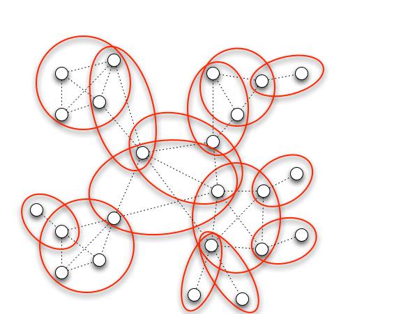
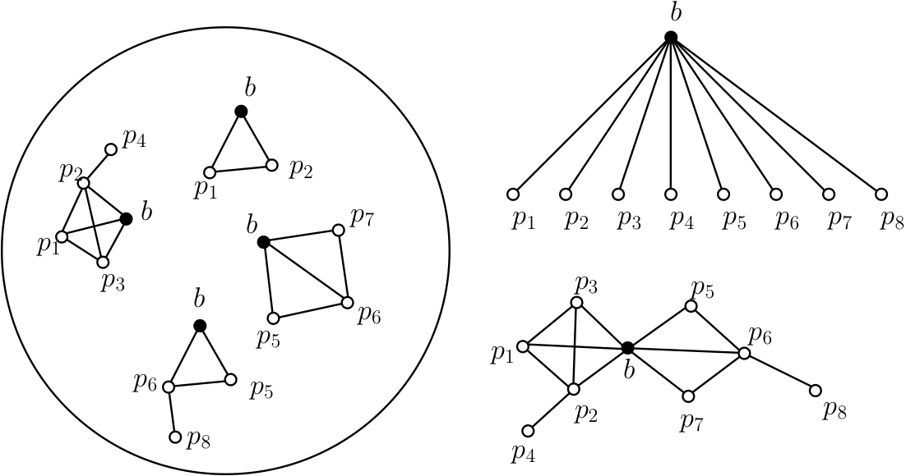
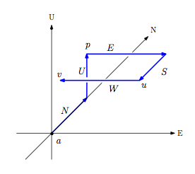
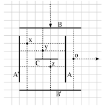
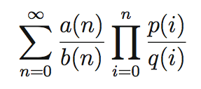
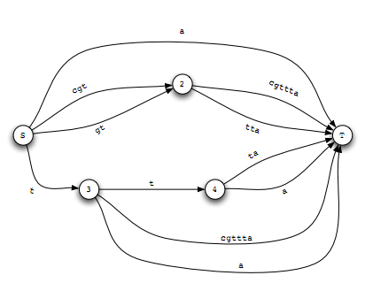

Research
Most of my work has been funded by NSERC (2004-2010), and CIHR (2010-2012).
If not listed here, papers in CS venue are usually available in DBLP server. [link]
Deconvolution of PPI Networks: Approximation Algorithms and Optimization Techniques
- PhD Thesis, McGill University, Dong Hyun "Ethan" Kim [link]
Clique Cover on Sparse Networks

We consider the problem of edge clique cover on sparse networks and study an application to the identification of overlapping protein complexes for a network of binary protein-protein interactions. We first give an algorithm whose running time is linear in the size of the graph, provided the treewidth is bounded. We then provide an algorithm for planar graphs with bounded branchwidth upon which we build a PTAS for planar graphs. Empirical studies show that our algorithms are both efficient and practical on actual simulated and biological networks, and that the clique covers obtained on real networks yield biological insights.
- Ethan Kim, Adrian Vetta, Mathieu Blanchette, Clique Cover On Sparse Networks, SIAM: Algorithm Engineering & Experiments (ALENEX) 2012 [link]
Discovering Direct Protein Interactions
We first propose a simple probabilistic model for the interactions captured by AP-MS experiments, under which the problem of separating direct interactions from indirect ones is formulated. Then, given idealized quantitative AP-MS data, we study the problem of identifying the most likely set of direct interactions that produced the observed data. We address this challenging graph theoretical problem by first characterizing signatures that can identify weakly connected nodes as well as dense regions of the network. The rest of the direct PPI network is then inferred using a genetic algorithm. Our algorithm shows a good performance on both simulated and biological networks with very high sensitivity and specificity. Then the algorithm is used to predict direct interactions from a set of AP-MS PPI data from yeast, and its performance is measured against a high-quality interaction dataset.
- Ethan Kim, Ashish Sabharwal, Adrian Vetta, Mathieu Blanchette, Predicting Direct Protein Interactions from Affinity Purification Mass Spectrometry Data, Algorithms for Molecular Biology 2010, 5:34. [link]
Topological Matching of Quad Meshes

We study exact and approximate topological matching of quadrilateral meshes, that is,
the problem of finding as large a set as possible of matching
portions of two quadrilateral meshes. We show that the problem of
producing a maximum approximate topological match of two quad meshes
is NP-hard. Further, we provide a "lazy-greedy"
algorithm that is guaranteed to find good matches when mis-matching portions of mesh
are localized. This work was done while visiting
Walt Disney Feature Animation
as an intern.
- David Eppstein, Michael T. Goodrich, Ethan Kim, Rasmus Tamstorf, Approximate Topological Matching of Quadrilateral Meshes, The Visual Computer, Vol 25 Issue 8, 2009. (preliminary version appeared in IEEE Shape Modeling International 2008) [link]
- David Eppstein, Michael T. Goodrich, Ethan Kim, Rasmus Tamstorf, Motorcycle Graphs: Canonical Quad Mesh Partitioning, Computer Graphics Forum Vol 27 Issue 5, 2008 (preliminary version appeared in Symposium on Geometry Processing, 2008). [link]
Orthogonal Graph Drawing with Direction Constrained Edges

Given a digraph G=(V, A) with direction function d:A->{N,S,E,W,U,D},
draw the graph in 3D such that the embedding respects the directions on every arc,
and no two edges intersect except at their shared endpoints.
We studied two special classes of graphs: paths and cycles, and show a
combinatorial characterization for graphs that admit such drawings.
This work is supported by NSERC CGS-M.
- Giuseppe Di Battista, Ethan Kim, Giuseppe Liotta, Anna Lubiw, and Sue Whitesides, The Shape of Orthogonal Cycles in Three Dimensions , accepted to Discrete & Computational Geometry [link]
- A note on drawing direction-constrained paths, Ethan Kim, Giuseppe Liotta, and Sue Whitesides, The 19th Canadian Conference on Computational Geometry 2007 [link]
- 3D Orthogonal Graph Drawing with Direction-Constrained Edges, Dong Hyun "Ethan" Kim, M.Sc. Thesis, School of Computer Science, McGill University, 2007 [link]
Bus Graph Realizability

Given a bipartite graph G=(V1,V2; E), where the maximum degree of vertices
in V2 is 4, can G be embedded on a two dimensional grid such that each
vertex in V1 is drawn as a line segment along a grid line, each vertex in V2
is drawn as a point at a grid point, and each edge e = (u, v) for some u in V1
and v in V2 is drawn as a line segment connecting u and v, perpendicular to
the line segment for u? We show that this problem is NP-complete, as well as
several other related problems.
- A. Ada, M. Coggan, P. Di Marco, A. Doyon, L. Flookes, S. Heilala, E. Kim, J. Li On Wing, L-F Preville-Ratelle, S. Whitesides, and N. Yu, On Bus Graph Realizability, The 19th Canadian Conference on Computational Geometry 2007 (also appeared in McGill Tech Report 2007.01)[link]
Evaluation of Hypergeometric Series
Many important constants, such as e and Apéry's constant Zeta(3), can be approximated by a truncated hypergeometric series. The evaluation of such series to high precision has traditionally been done by binary splitting followed by fixed-point division. However, the numerator and the denominator computed by binary splitting usually contain a very large common factor. We apply standard computer algebra techniques including modular computation and rational reconstruction to overcome the shortcomings of the binary splitting method. The space complexity of our algorithm is the same as a bound on the size of the reduced numerator and denominator of the series approximation. Moreover, if the predicted bound is small, the time complexity is better than the standard binary splitting approach. Our approach allows a series to be evaluated to a higher precision without additional memory. We show that when our algorithm is applied to compute Zeta(3), the memory requirement is significantly reduced compared to the binary splitting approach. This work is supported by NSERC USRA.
- Cheng, H. and Gergel, B. and Kim, E. and Zima, E. Space-Efficient Evaluation of Hypergeometric Series, ACM SIGSAM Communications in Computer Algebra, 2005, volume 39, No 2, 41–52 [link]
Fast Filtering for HMMs in Domain Discovery
Hidden Markov Models(hmms) have been very popular tools for domain detection problem in computational biology. However, when the size of the input data is large, simple linear searches through the entire database against the hmm are not su¿ciently fast for realistic applications. In this paper, we propose different methods to accelerate this process by using techniques from combinatorial data structures and graph theoretic algorithms.
- Ethan Kim, Harley Cooper, Fast Filtering for HMMs in Domain Discovery (manuscript, 2005) [link]